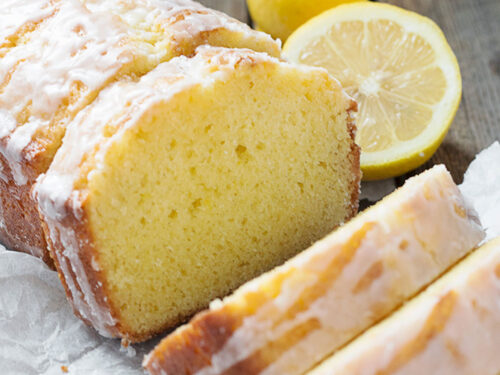

Lemon Pound Cake

Description
A classic recipe and one of the simplest cakes to make, pound cake dates back to the 1700s
Very standard ingredients including a base of creamed butter and sugar, eggs, lemon, milk, and flour
Ingredients
- 1 cup unsalted butter
- 3/4 cup white sugar
- 3 eggs
- 1 cup cake flour
- 2 tablespoons dry milk powder
- 1 tablespoon corn syrup
- 1/2 lemon, juiced
- 1/4 teaspoon salt
- 1/2 teaspoon vanilla extract
- 1/4 teaspoon ground nutmeg
- 1/2 teaspoon baking powder
- 1/4 teaspoon ground mace (Optional)
Directions
- Allow butter to reach room temperature. Cream sugar and butter together until light and fluffy.
- Add eggs one at a time and mix well. Add in flour, powdered milk, and corn syrup. Beat each in well.
- Add juice of half a lemon, salt, vanilla, nutmeg and mace.
- Make sure everything is well blended, and pour into a greased loaf pan.
- Bake at 325 degrees F (165 degrees C) for 45 minutes, checking for doneness by inserting a toothpick and seeing if it comes out clean. You almost want to underbake this.
Return to Recipes